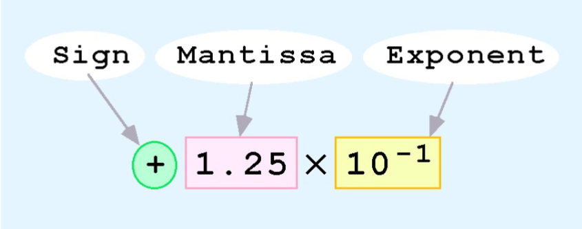
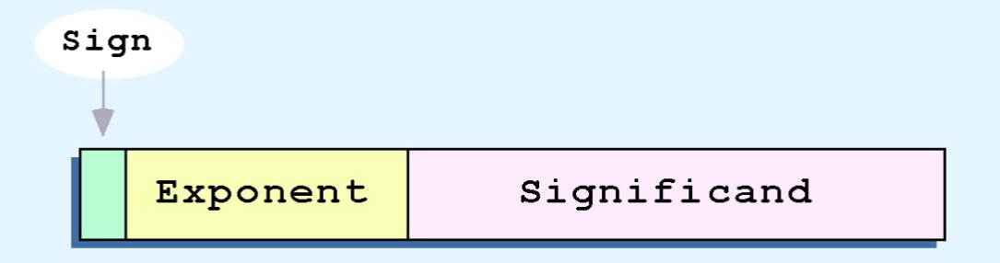

Module 2
- Reading Notes
- ** has quiz
- Boolean Algebra ** has quiz
- Sum of Products Form ** has quiz
- Class Notes
Reading Notes
Class Notes
Floating-Point Representation
- The signed magnitude, one's complement, and two's complement representation that we have just presented deal with signed integer values only.
- Without modification, these formats are not useful in scientific or business applications that deal with real number values
- Floating-point representation solves this problem.
- If we are clever programmers, we can perform floating-point calculations using any integer format.
- This is called floating-point emulation, because floating point values aren't stored as such; we just create programs that make it seem as if floating-point values are being used.
- Most of today's computers are equipped with specialized hardware that performs floating-point arithmetic with no special programming required.
- Floating-point numbers allow an arbitrary number of decimal places to the right of the decimal point.
- (ex.) 0.5 × 0.25 = 0.125
- Often expressed in scientific notation
- (ex.) 0.125 = 1.25 × 10-1
- Computers use a form of scientific notation for floating-point representation
- Numbers written in scientific notation have three components.
- Computer Representation of a floating-point number consists of three fixed-size fields:
- This is the standard arrangement of these fields. ↑
- One Big Sign → Sign of the stored value (+ or -)
- Size of exponent field → Range of values that can be represented
- Significand → determines the precision of the representation
- Hypothetic simple model:
- A floating-point number is 14 bits in length
- The exponent field is 5 bits
- Significand field is 8 bits
- Significand always precede by an implied binary point
- thus significand always contains a fractional binary value
- Exponent indicates the power of 2 by which the significand is multiplied
- (ex.) express 32.010 in the simplified 14-bit floating point model
- 32 = 25. In (binary)scientific notaion 32 = 1.0

